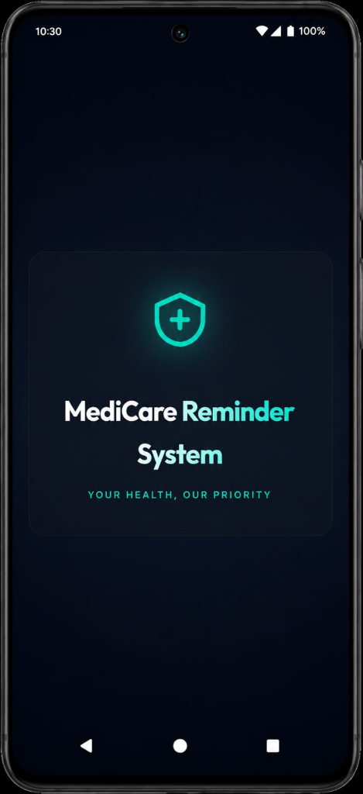
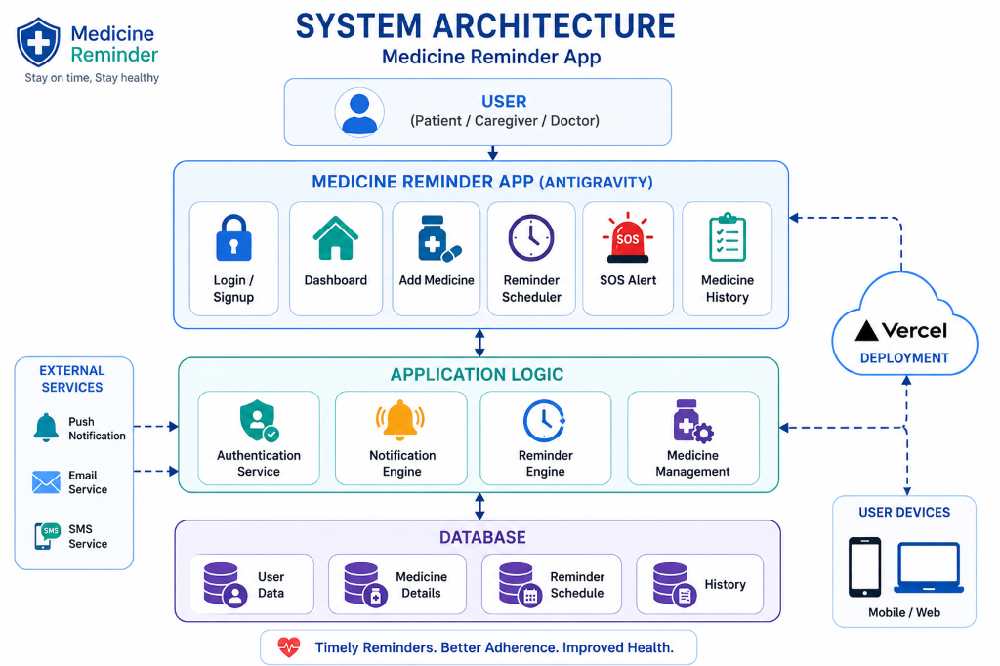
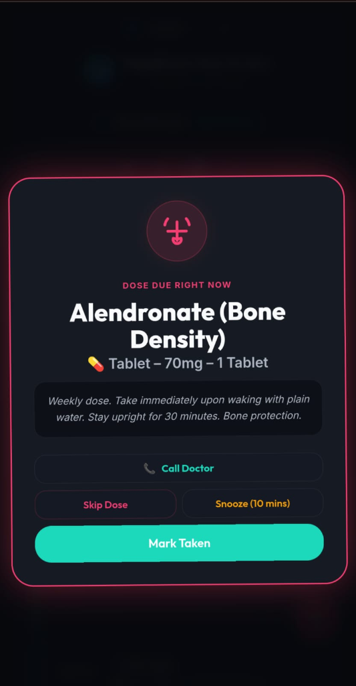
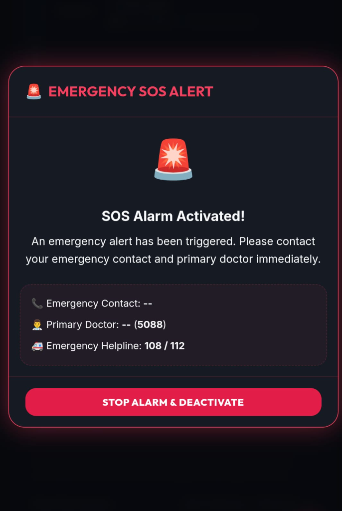

Your Health, Our Priority — Offline-First Medication Adherence & Safety Platform

Medicare is a smart, offline-first application designed for elderly patients to manage daily medications easily. It works without internet, speaks instructions aloud, and syncs automatically to keep caregivers informed.
Saves checklist updates instantly to browser database cache, then syncs with Firebase in the background.
Translates headers, alerts, and custom medicine names fully into Hindi and Telugu.
One-tap buttons to immediately dial primary doctors, caregivers, or public ambulance lines.
Many people forget to take their medicines on time because of busy schedules, old age, or memory problems. Missing medicines can cause serious health issues and reduce treatment effectiveness. Patients need a simple system that reminds them about medicine timings regularly.
The Medicine Reminder App is developed to solve this problem by giving alerts and reminders to users at the correct time. This helps people take medicines properly and improve their health care management.
Manual paper diaries or checklists that are easily lost or misplaced.
Cloud-only apps that freeze and block users when internet is slow.
No immediate caregiver notification or direct dialing emergency buttons.
Firestore IndexedDB local sync ensures zero database write delay.
0.05s button transitions and fast modal opening prevent click delays.
Built-in Speak Aloud button, Hindi/Telugu options, and emergency calling.
Any standard smartphone, tablet, laptop, or desktop computer.
Minimum 2GB RAM (4GB RAM recommended for best performance).
Google Chrome, Apple Safari, Microsoft Edge, or Mozilla Firefox.
HTML5, Vanilla CSS3, Javascript (ES6+), Firebase Cloud Firestore.
The app uses a structured client-server architecture to provide offline-first speeds and real-time alerts:
Displays pill cards, captures touch scale inputs, and runs Hindi/Telugu localizations.
Handles the authentication service, notification engine, and medicine schedule checkers.
Syncs background user history to Firestore, running on Vercel deployment servers.

The branding screen welcomes users with dark themes tailored for senior accessibility.
Quick login options for patients to track pills and caregivers to check adherence logs.
Dark charcoal canvas with bright teal indicator glows to make options readable.
A high-contrast overlay card alerts the user immediately when a scheduled medicine is due.
Seniors can mark medication "Taken", "Snooze" it for 10 minutes, or dial their doctor instantly.
Optimized touch configuration prevents latency, making buttons react instantly.

Tapping the SOS icon plays local siren warnings and opens the emergency portal.
Lists direct tap-to-call numbers for linked caregivers, primary doctors, and public ambulances.
Pushes critical panic warnings immediately to the caretaker dashboard live feed.

Medicare bridges the gap between elderly adherence and caregiver peace-of-mind by resolving device lags, network timeouts, and localization issues.
Experience the Live Website:
medicine-reminder-navy-phi.vercel.appThank you for your time!